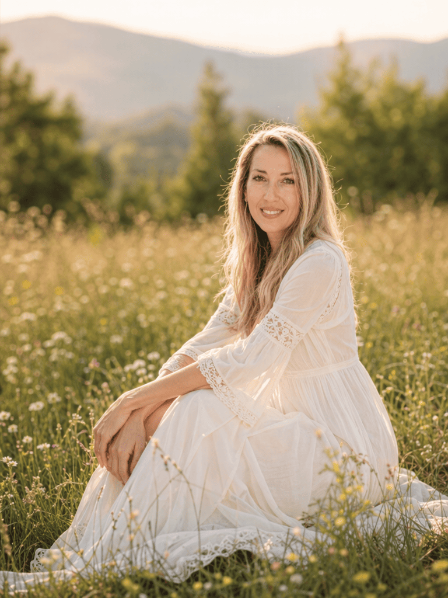

Príbeh ženy, ktorá našla slobodu v tvorení a dnes pomáha ostatným realizovať ich sny.
Spoznajme sa bližšie
Svojim klientom pomáham rásť a zviditeľniť sa v online svete. A to práve prostredníctvom modernej a profesionálnej webovej vizitky, či pútavej grafiky.
Uvoľňujem im tiež ruky tým, že ich odbremením od činností, ktoré ich taaaak celkom nebavia, či nenapĺňajú. Som pripravená pomôcť, usmerniť a zjednotiť ich vízie, aby mohli svoj čas venovať svojmu podnikaniu, či veciam, na ktorých skutočne záleží.
So svojim 20 ročným zázemím v administratíve dokážem vybaviť, zariadiť a spravovať prakticky čokoľvek.
Zaujíma vás spolupráca so mnou? Neváhajte ma kontaktovať.
Moja misia.
“Mojim poslaním je pomáhať ľuďom s činnosťami, ktoré ich tak úplne nebavia a bránia im venovať sa svojmu poslaniu, či životným radostiam.
Predstaviť vašu esenciu a služby s vedomím, že sa vaša značka v pozadí rozrastá bez toho, aby ste tomu museli venovať čas navyše.”
Prakticky celý svoj profesijný život som pracovala v oblasti administratívy a pohybovala sa v kancelárskom prostredí. Hoci ma práca v administratíve vždy bavila, nevyhovovali mi určité obmedzenia, ktoré so sebou život zamestnanca prinášal.
Potreba žiť slobodnejším spôsobom života sa ešte viac prehĺbila narodením môjho syna. Začiatky boli krásne, ale zároveň veľmi náročné. Dlho sme nerozumeli tomu, prečo sú niektoré situácie také vyčerpávajúce a prečo sa náš príbeh odlišuje od príbehov mnohých iných rodín. Až keď sa časom ukázalo, že môj syn má PAS, začali jednotlivé dieliky postupne zapadať do seba.
V tom čase som sa už dlhé roky venovala seba-rozvoju, no až narodením môjho syna sa táto cesta zrýchlila závratnou rýchlosťou a zmenila všetko, čo som dovtedy pokladala za svoje istoty a doterajší život.
Ako slobodná mama som o to viac túžila vytvoriť život, v ktorom budem môcť byť synovi oporou a zároveň si prácu prispôsobiť našim novým potrebám. A tak som začala hľadať spôsob, ako to dosiahnuť.
Po viac ako dvadsiatich rokoch v korporátnom prostredí som sa rozhodla urobiť krok do neznáma. Opustila som stabilitu zamestnania a vydala sa vlastnou cestou.
Nebolo to jednoduché rozhodnutie. Bolo to rozhodnutie srdca. Potrebovala som vytvoriť život, ktorý bude rešpektovať potreby môjho syna aj moje vlastné hodnoty.
Dnes viem, že to bolo jedno z najlepších rozhodnutí, aké som mohla urobiť. Vďaka nemu môžem byť tam, kde ma môj syn potrebuje, a zároveň pomáhať ľuďom budovať ich vlastné sny, projekty a podnikanie.

Môj synček je obrovský učiteľ, ktorý vždy dokonale nastaví zrkadlo
a učí ma každý deň bezpodmienečnej láske a pokore.
Je to hnací motor, ktorý mi zakaždým pripomína, čo je v živote skutočne dôležité
a prečo som sa dala na túto cestu.

Začiatky boli plné zmien a prinášali množstvo otázok, prebdených nocí aj nečakaných výziev. Pracovať som mohla najmä vtedy, keď celý svet spal.
Práve toto obdobie ma naučilo pozerať sa na svet inými očami. Vďaka môjmu synovi som objavila hĺbku bezpodmienečnej lásky, trpezlivosti a vnútornej sily, o ktorej som dovtedy ani netušila, že je možná. Naučil ma spomaliť a uvedomiť si, čo je v živote naozaj dôležité.
A to vybudovalo základy toho, čo dnes tvorí Soul Design.
Vždy som svoj život žila s vedomím, že ľudskosť a láskavé činy majú moc premeniť svet. Táto teória sa mi potvrdila v čase, keď som to sama najviac potrebovala.
Zažila som mnoho láskavých činov, pri ktorých mi ľudia v mojej situácií darovali svoje vedomosti, či hodnotné kurzy. Osobitná vďaka patrí Magdaléne Bouškovej a Darji Janíčkovej z projektu Šťastná VA, ktoré mi podali pomocnú ruku práve v období, keď som ju najviac potrebovala.
Práve tieto stretnutia sú pre mňa zhmotnenými zázrakmi. Pripomínajú mi, že aj jedno láskavé gesto môže zmeniť smer niečieho príbehu. Dnes sa snažím túto pomoc posúvať ďalej. Každý projekt, na ktorom pracujem, vnímam ako príležitosť podporiť ďalšieho človeka na jeho vlastnej ceste. Pretože verím, že keď si navzájom pomáhame rásť, vznikajú tie najkrajšie príbehy.
Verím, že každý človek nosí v sebe niečo jedinečné, čo stojí za to ukázať svetu. Niekedy však medzi snom a jeho realizáciou stoja povinnosti, technické prekážky alebo jednoducho pocit, že na všetko musíme byť sami.
Práve preto som tu. Aby som vám pomohla vytvoriť priestor, v ktorom sa môžete naplno venovať tomu, čo robíte najlepšie. Či už je to webová stránka, vizuálna identita alebo dlhodobá online podpora, mojím cieľom nie je vytvoriť len pekný výsledok. Chcem vytvoriť zázemie, v ktorom môžu rásť vaše vlastné sny.
Moji klienti sú vedomí tvorcovia, jedineční živnostníci či malé firmy, no všetci majú niečo spoločné.
Vďaka našej spolupráci vytvárame prostredie, v ktorom slovo klient stráca svoj význam a mení sa na partnerstvo založené na dôvere.
Svojim klientom pomáham rásť prostredníctvom moderných webových stránok, grafického dizajnu a kreatívnej online podpory.


.png)